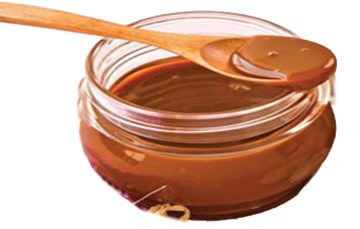

1️⃣Información.
La cajeta es un dulce tradicional mexicano que se elabora a partir de leche de cabra cocida con azúcar hasta que se convierte en una salsa espesa y caramelizada. Tiene un sabor dulce y una textura suave, que puede variar desde líquida hasta más espesa dependiendo de cuánto se cocine. Se puede usar como acompañamiento de postres, como relleno de pasteles, o simplemente se puede disfrutar con pan o helado.
La cajeta se originó en el estado de Guanajuato, México. Su elaboración es una tradición que se ha transmitido de generación en generación, y se cree que la receta se remonta a tiempos coloniales. Históricamente, la cajeta se ha hecho principalmente en pequeños pueblos y regiones de México, y su popularidad ha crecido con el tiempo.
Uno de los nombres alternativos para la cajeta es "cajeta de pueblo", debido a que a menudo se elabora en pequeñas comunidades y en el contexto de la vida rural. La cajeta no solo es un dulce apreciado en México, sino que también se ha convertido en un símbolo cultural, representando la riqueza de las tradiciones culinarias mexicanas. Además, la cajeta tiene una versión en la que se mezclan nueces o almendras, añadiendo una textura y sabor únicos al dulce.
2️⃣Conoce más.
3️⃣Hazlo tú mismo.
Ingredientes.
- 1 litro de leche de cabra.
- 1 1/2 tazas de azúcar.
- 1/4 taza de miel de caña (opcional).
- 1/2 cucharadita de bicarbonato de sodio.
- 1 cucharadita de esencia de vainilla (opcional).
Instrucciones:
- En una cacerola grande, calienta la leche de cabra a fuego medio.
- Agrega el azúcar y la miel (si la usas) y mezcla bien.
- Disuelve el bicarbonato de sodio en una pequeña cantidad de agua y agrégalo a la mezcla de leche.
- Cocina a fuego lento, removiendo constantemente con una cuchara de madera para evitar que se queme, durante aproximadamente 1 a 1 1/2 horas, o hasta que la mezcla se reduzca y adquiera un color dorado oscuro.
- Retira del fuego y agrega la esencia de vainilla si la estás usando.
- Deja enfriar la cajeta a temperatura ambiente. Se espesará más al enfriarse.
- Transfiere la cajeta a frascos limpios y secos y almacénala en el refrigerador.